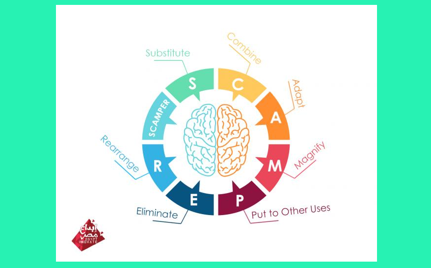
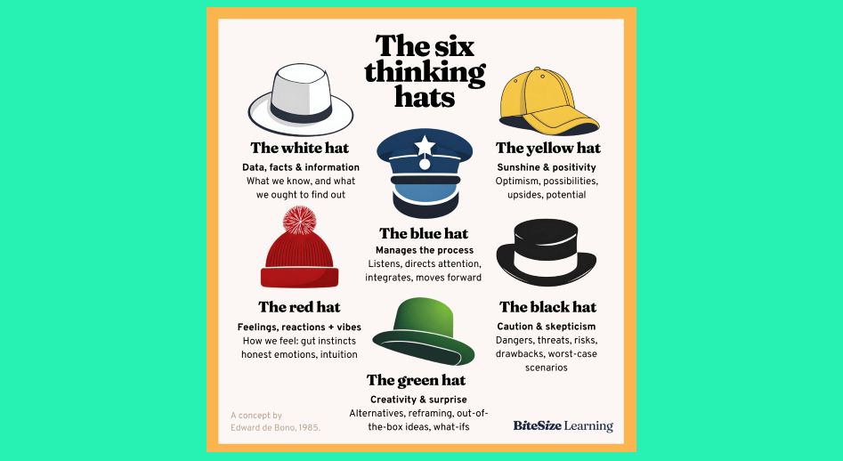

Examples of How Others Tackle Creativity and Problem Solving
Creativity Prompts
These can be fantastic to help inspire creative practice
or a starting point for your next work.
Handtufting a Natural Environment Themed Rug
Portugese Textile artist Vanessa Barragao
making an amazing rug for her Picos Collection using yarn waste
and deadstock from factories around portugal.
Creative Writing by David Foster Wallace
A short piece of creative writing written by author
David Foster Wallace in 2006 for the New York Times.
The Eden Project
The Eden Project is a large greenhouse in England designed by
the Architecture firm: Grimshaw Architects and completed in 2001. The design is
combrised of biome modules made to mimmick the look of soap bubbles, and designed
to be lightweight and easy to handle.
Pollywog: Childrens ride on concept
This is a Childrens 2 wheeled ride on toy concept designed by Karen Fojas Lee.
that is intended to help 2-4 year olds develop balance and learn how to steer before eventually
progressing to be able to ride a bycicle.
Penguin and Fish Toy Concept Designs
Moving fish and penguin conept designs by childrens toy and furniture
designer Michael Screen.
Future Housing Concept
This is a concept of what our housing may look like in the future
if humanity continues down the path we are on. Due to overpupulation and terrible considerations
we will be using anything we can find to create housing in any free space, including abandoned buildings
of shut down businesses and on top of, above, in the air, and in and around the grounds of these buildings.
Creative Writing: Lil Froggy, with Drawing
A solution to a memory based creative writing task that its creator had.
Scrapbboking Mood Board
Mood boards can be a great step in creative thinking and
problem solving processed, as an inspiration and guidance tool.
Map of Good Memories
A possible solution to creative writing tasks,or any creative
outlet, especially during planning stages.
Scrabooking and Journaling
Journaling, including scrapbbooking styles like this One can be a fantastic
tool for gathering inspiration, building off and synthesising pre existing ideas/concepts,
ideating and planning planning for creative, creative thinking and problem solvingn activities.
Cities of the Future
National Geographic challenged the Architectural and urban planning
firm Skidmore, Owings, & Merrill to design a city of the future directed by what
they have learnt and know the past and the challenges anticipated for humanities future.
This is a possible solution they came up with.
Task Analysis Map
Thinking through problems, and planning how to tackle through
use of Task Analysis and storyboards. This can include writing out potential barriers
and considerations to take.
Jurassic Park Storyboard
This is a small sample of Dave Lowry's storboard drawings
for the 1993 film Jurassic Park, written by Michael Crichton and directed
by Steven Spielberg.
AI Genereated Steam Punk Art
This is a desing generated by AI: DALL.E 3 Model from the prompt: a steam punk time
travel machine.
Creativity Definition
Synthesised from: Oxford Learners Dictionary, American Psychology Association.
Creativity is the ability to go beyond the ordinary to produce or develop original work, theories,
techniques or thoughts, typically displaying originality, imagination, and expressiveness.
It can be practised and developed in many different outlets, such as the visual arts,
literature, sciences, creating problems, solving problems, and general day-to-day life.
Creativity Fun Facts
1: Creativity is not something you just have or not; creativity can be learned, practised, and nurtured.
It is something you can continue to improve on.
2: Creativity is driven by curiosity and exploration.
3: Creativity is subjective based on unique perspectives and experiences shaping the individual's creative
expressions, resulting in a diverse range of creative outputs. What is considered creative can change from person to person.
4: Our environments can have a huge impact on our creativity. Well-designed spaces with adequate lighting and
comfort can stimulate creative thinking. As can colours, sounds, and smells.
5: Our moods and emotions can affect our creativity. Positive emotions can enhance creativity, but our more
challenging and difficult emotions can inspire them. So, try to be creative even if you are upset or angry.
6: Creativity is a risk-taking activity. Embracing uncertainty and being willing to make mistakes can
lead to breakthrough ideas and innovative solutions.
7: Creativity is needed for progress and innovation. Without creativity, our world and lives would be vastly different.
Creativity Processes
Creativity Process 1: Graham Wallas' Creative Process.
Step 1-Preparation:
The preparation stage is about researching and deliberately
exploring the problem in different contexts and from different perspectives.
It is a learning phase through which we expand our concepts and understand that endless possibilities exist.
Step 2-Incubation:
The second step occurs subconsciously and can appear more enigmatic as the intention is to no longer focus on the problem.
This can be difficult when the purpose of this process is centred around creativity and developing new ideas, but it can be helpful
to either focus on another problem or task or try to do nothing but relax. This will allow the brain to relax and incubate all the
learning achieved in the preparation stage.
Step 3-Illumination:
This is the peak creative stage, when your brain develops great ideas and connects pieces together, bringing solutions to light.
These Illuminating moments can happen at any time, in any situation, but can commonly include while showering and toileting,
just before you fall asleep and while walking or driving.
Step 4-Verification:
In this final stage, we evaluate one of these ideas, verify that it is realistic and an appropriate or worthy solution, and start
building the framework around it to bring it to life.
If needed, we modify/adapt the ideas or disregard it and pick another idea to verify.
Creativity Process 2: Universal Creative Process.
Step 1-Identify Goals:
Begin creating a better future: What does the
individual, team, organization or culture have “care, concern or desire” for?
Of all of the things that are cared about, which one carries the most
energy or excitement in this moment?
Which, if resolved, will move you or the team more fully in the
direction they wish for now?
Step 2-Gather Input/Insight:
What is everything knowable that might impact our thought processes
as we progress in resolving our most important care? What is important data? What
human aspects of this should we develop empathy for?
What are the feelings from various groups about this focus? What
seemingly unrelated information is there that might have an influence as we move forward?
What have we not considered that we might be wise to consider?
Which input does the data, group-think and personal intuition cause us to see as most important?
Step 3-Carify Challenges:
What is everything knowable that might impact our thought processes
as we progress in resolving our most important care? What is important data? What
human aspects of this should we develop empathy for?
What are the feelings from various groups about this focus? What
seemingly unrelated information is there that might have an influence as we move forward?
What have we not considered that we might be wise to consider?
Step 4-Generate Ideas:
Create some options: What might be all the ways to solve the challenge/problem being focused on now?
Among all those ways, which of them (often more than one, or a combination of many) does the data, group think,
personal intuition and current capacity/skill attract us to implementing?
Step 5-Prototype and Strengthen:
Try to test some solutions by creating concept illustrations, models, mock-ups, validation experiments or storyboards.
While testing hypotheses, consider which ideas will help us overcome our challenges and achieve our goals.
Also, think about what is being learnt and how solutions might be strengthened. What new challenges are inherent in the possible
solutions and how can these be amended for any of the solutions to be successful? Finally Which solution is good enough (for now) to implement?
Step 6-Plan for Action:
Design a project plan, considering and highlighting all the specific actions that must be implemented to make our solution a reality. Then,
identify and outline which are the top priorities and when they need to be completed to stay on track.
Step 7-Implement and Evaluate:
Assure that the chosen options are implemented consistently and that, where modifications are needed, you understand why and make them happen.
It is also crucial to think about what happens after implementation. What is the mechanism and timing for a review of the effectiveness of the
solution? How will control and consistency be assured?
Creativity isn't something you have: It's something you do.
Hint: explore creative thinking and problem-solving for ways to solve the challenges and use prompts.
Prompts and Challenges 1: 30 Circles
You will need a piece of paper/card (of any size, or several if needed) with 30 plain circles (any size).
The challenge is to turn each circle into a different recognisable object/item, e.g., a sunflower or a bowling ball.
Try repeating the task with a piece of paper of a different size. To extend on this, consider using one
or more of these solutions to create a scene using the method of your choice, i.e. writing, drawing, sculpting, etc.
Prompts and Challenges 2: A Whole New World:
Imagine a new world (jotting down your answers). Think about what this world is made of and what the climate is like?
the air quality, the temperature.
What do the plants look like/smell like/feel like? What is the terrain? What animals/creatures are on this planet?
After completing this, move on to part 2 on the next slide.
Prompts and Challenges 3: A Whole New World 2:
How would humans need to adapt to survive on this planet?
Prompts and Challenges 4: The Household Skyline:
Imagine/conceptualise and describe/draw/tell a story about a city
skyline made of household items.
Prompts and Challenges 5: Reimagining History:
Choose any figure throughout history and reimagine them and
their environment as a steampunk version.
Then/or alternatively reimagine them if they lived 300 years in the future.
Prompts and Challenges 6: Fix the Worlds Environments/Climates:
No matter how realistic or unrealistic, if you have no monetary limits nor are you
limited to existing science and technology, how will you stop and reverse the damages human life has
made on earth's environments and climates?
Prompts and Challenges 7: The Unexplored Ocean:
According to National Geographic (2024), over 80% of Earth's oceans remain unexplored.
You have decided you will be the one to explore and map this.
The first step is to design, draw/describe/sculpt the submersible technology to do this;
it needs to be able to at least film all 360 degrees of the surrounding area.
Questions to consider and possibly answer: What does this submersible look like? what does it sound like?
how does it move and explore? how does it withstand pressure? and what technologies does it use? How does it supply you with air?
What food and drink are available and how? How will you relax and sleep? How will you continuously film and record information?
National Geographic. 2024. “Encyclopedic Entry: Ocean.” National Geographic. https://education.nationalgeographic.org/resource/ocean/.
Prompts and Challenges 8: Exploring the Unexplored Ocean:
Now that you have a submersible you can use,
explore the unexplored oceans and depths.
Describe (written or drawn) how you feel emotionally and physically; what can you see? Hear? Do you feel comfortable? Safe?
Revisit these at different points in your imagined journey.
Prompts and Challenges 9: The Spliced World:
Imagine a new world, flora, fauna, climate/environment by splicing and genetically mutating different existing flora,
fauna, climates/environments and consider combing flora and fauna.
Think about what they look like, smell and sound like, their abilities, sizes, speed etc.
Prompts and Challenges 10: The Universe's Origins:
Imagine what universal origins via the Big Bang were like: describe how it occurred, what it looked like, felt like, and sounded like.
Alternatively (or in addition), imagine what universal origins via creation by a higher power were like, what does the higher power look like,
what did they do to create the universe, and how did they do it?
Prompts and Challenges 11: I Can see Dark Matter:
You have been blessed or cursed with the unique ability to see dark matter and energy.
Describe or draw what you see, considering both positives and negatives.
Prompts and Challenges 12: The Prompt Randomizer:
Write out as many nouns as possible on scrap paper - one per piece or cut them out later.
Put them word-side down in a loose pile.
Complete the same task with verbs, adjectives and adverbs ensuring each type is in its own pile.
Once you have done this, randomly pick one word from each pile. This is the prompt for the next
piece of creative writing or art you complete.
Repeat this as many times as you like and store them for future prompts.
Prompts and Challenges 13: Finding a Problem Solve:
Visit the 80,000 HOURS WEBSITE or alternatively google the biggest problems we
need to solve (or similar), pick one of the problems and start brainstorming/mind mapping (or another problem-solving/creative thinking process) any possible solution.
This doesn't have to be realistic or within the scope of our abilities and technologies we have right now. Start making connections between
each idea if possible, and narrow down your list to a few you think could be best/ or you like the most and explore this idea through drawings or descriptions
or stories, or you could even create prototypes.
Prompts and Challenges 14: Narrating Images:
Look online or in books for images/photos of historical scenes, places, and events. Choose one or a couple of these and create a narrative,
dialogue or monologue based on what you see in the image.
Alternatively, complete the same task with modern images/photos and/or futuristic.
Prompts and Challenges 15: Creating Backstories:
Sit outside, go to a mall, a coffee shop, or the beach, anywhere you can sit and observe people and animals
and pick a person or an animal that intrigues you. Begin to observe your chosen subject and create (written or drawn) a
back story for your chosen observation.
If you don't feel comfortable or able to draw or write this in person - make good notes for use later; alternatively,
you can write their future their monologue/the world from their view.
Prompts and Challenges 16: Monologues of the Inanimate or Insentient:
Choose an inanimate or insentient/presumed insentient object, i.e a building, a rock, a tree, a flower, a piece of fruit,
an item of clothing, your bed or any others you think of and create what their internal monologue might be if it were sentient.
Prompts and Challenges 17: Adapting to Future:
Our life as we know it is about to end/change, Volcanic cracks are beginning to appear worldwide on land and
ocean floors; pyroclastic flows (flowing mix of rocks, gas and ash) are appearing, everything is heating up,
massive eruptions are imminent, and so are tsunamis.
What is the outcome for us, i.e. do we survive and somehow adapt? Do some of us make it off the planet to start a new colony;
maybe even back to Earth if nature recovers? Do we go extinct like the dinosaurs, but some evolutions of living beings survive and
continue to evolve? If so, what comes next?
Prompts and Challenges 18: Cogs of Time:
Use this as a writing or drawing prompt: As the cogs turn forward, so does time. If only we could control time with cogs:
turning back time, stopping time, slowing it down, or speeding it up.
Maybe if we added or took cogs away, we could create new timelines or take cogs from one timeline and put them in another.
Imagine if time travel and entering different timelines was as simple as taking your cog out of the current timeline and placing it at a different point.
This could create the potential, for better or worse, for creating new worlds or endless destruction, manipulating events and opportunities.
Challenge 1: 30 Circles
Challenge 2: A Whole New World:
Challenge 3: A Whole New World 2:
Challenge 4: The Household Skyline:
Challenge 5: Reimagining History:
Challenge 6: Fix the worlds environments:
Challenge 7: The Unexplored Ocean:
Challenge 8: Exploring the Unexplored Ocean:
Challenge 9: The Spliced World:
Challenge 10: The Universe's Origins:
Challenge 11: I Can see Dark Matter:
Challenge 12: The Prompt Randomizer:
Challenge 13: Finding a Problem Solve:
Challenge 14: Narrating Images:
Challenge 15: Creating Backstories:
Challenge 16: Monologues of the Inanimate:
Challenge 17: Adapting to Future:
Challenge 18: Cogs of Time:
Creative Thinking Definition
Synthesised from: American Psychology Association,
Australian Council for Education Research, Oxford University.
Creative Thinking, just like creativity, falls on a spectrum
of beliefs and ways of doing with no singular, wholly accepted definition. A
generalised understanding is that creative thinking is a way of looking at problems or
situations from new or different perspectives; it is the mental process leading to new
possibilities, new ideas, inventions, solutions, or syntheses in any area.
Solutions could be completely new or use pre-existing elements that have been adapted
and/or combined, creating new relationships between them. People might use several ways of
thinking, including lateral, divergent, and convergent thinking.
Lateral Thinking
Lateral thinking is based on finding creative or alternative solutions to a
challenge beyond logical or deductive reasoning, basically seeking to solve problems using unique methods.
This relies on creative thinking, and the ability to consider every aspect of a situation with a
unique approach or the willingness to look at things in a different way.
Divergent Thinking
In simple terms, divergent thinking is when a person uses creativity and follows many lines of
thought and the free flow of ideas to examine a problem to generate new/original solutions. Essentially,
it is a non-linear thought process that analyses a solution on a broad scale and encourages multiple and
relatively scattered solutions. Compared to other thought processes, divergent thinking is a non-linear method.
It includes shifting perspective on existing information (seeing it in a new way) or transforming it, for
instance, through unexpected combinations of elements usually not regarded as belonging together.
Convergent Thinking
The convergent thought process involves using logic and established information to reach a definitive solution,
often eliminating ambiguity and conducting steps, such as examining logical data and establishing constraints, to make
an informed conclusion. It evaluates various possibilities and applies established rules and logical reasoning to converge
on a single answer or the best possible solution. This is done using structure reasoning in sequential order, and critical evaluation
where each step logically follows the preceding and each possibility is analysed and dissected, clearing out the weaknesses and
flaws leaving only the most viable options for solutions.
Creative Thinking Fun Facts
1: 72% of people have their creative insights while showering.
2: Trying new things makes you more creative, so why not try something new?
3: Positivity enhances creativity, so think positively.
4: Stress is bad for creativity.
5: Creative thinking incorporates many attributes: fluency, flexibility, originality,
sensitivity to problems, and the ability to transform the known.
6: Regarding creative thinking, there is no right or wrong answer, no definitive
right answer, and no failure.
7: Sleep is beneficial for creative thought. So, make sure you get enough.
Creative Thinking Processes
Creative Thinking Process 1: SCAMPER.

Step 1-Substitute:
What can I replace in the composition, the material, the appearance etc.
of the product? Guiding questions:
• What can I substitute to make an improvement?
• How can I substitute the place, time, materials or people?
• Can I substitute one part for another or change any parts?
• Can I change the rules?
• Can I use other processes or procedures?
• Can I change its shape, colour, roughness, sound or smell?
• Can I use this idea for other projects?
Step 2-Combine:
What can I combine with the product to improve it? Guiding questions:
• What ideas, materials, features, processes, people, products, or components can I combine?
• What can I combine so as to maximize the number of uses?
• Which are the best elements I can bring together so as to achieve a particular result?
Step 3-Adapt:
Can I adapt the product to something else or copy something from existing designs?
Guiding questions:
• Which part of the product could I change?
• Could I change the characteristics of a component?
• Can I seek inspiration in other products or processes in a different context?
• Which ideas could I adapt, copy, or borrow from other people's products?
Step 4-Magnify/Minify/Modify:
What can I magnify, minimize or modify about the product? Guiding questions:
• What can I magnify or make larger?
• What can I tone down or remove?
• Could I exaggerate elements?
• What can be made higher, bigger, or stronger?
• Can I increase its speed or frequency?
• Can I add extra features?
• How can I add extra value?
• What can you remove or make smaller, lighter, split or understate?
Step 5-Put to Other Uses:
Can I use the product for something else? Guiding questions:
• What else can it be used for?
• How would different age groups use it?
• How would people with different abilities/disabilities use it?
• Are there other target groups who could benefit from this product?
• Can it be used by people other than those it was originally intended for?
• Are there new ways to use it in its current shape or form?
• Would there be other possible uses if I were to modify the product?
Step 6-Eliminate:
Can I eliminate elements from my product to make it better?
Guiding questions:
• What can I remove without altering its function?
• Can I reduce time or components?
• What would happen if I removed a component or part of it?
• How can I simplify it?
• What's non-essential or unnecessary?
Step 7-Rearrange/Reverse:
Is there anything I can reverse, turn inside out or do in a different order?
Guiding questions:
• What can I rearrange somehow, can I interchange components, the pattern, or the layout?
• Can I change the pace or schedule?
• What would I do if part of the problem, product or process worked in reverse?
Creative Thinking Process 2: The Six Thinking Hats.

White Hat-Facts, Objectivity and Logic:
In this mode, you look at your information, identify what you don't have,
and consider how to get additional information.
When the White Hat is in use, participants are encouraged to present existing data,
including statistics, reports, and tangible evidence relevant to the topic at hand. the White Hat
is about developing an informed understanding of the situation.
Blue Hat-Control, Process and Co-ordination:
The Blue Hat serves as the conductor of the thinking process, offering a crucial overarching
perspective that ensures structure and focus.
Distinct from the other hats, which are concerned with specific types of thinking, the Blue Hat is about
managing the thinking process itself. It's the hat worn by the meeting's facilitator or leader, guiding the discussion,
setting the agenda, and ensuring that each of the other hats is effectively utilised in turn.
The primary purpose of the Blue Hat is to maintain a clear focus and direction throughout a discussion or decision-making process.
This involves establishing the objectives at the outset, defining the sequence in which the other hats will be used, and keeping the discussion on track.
The Blue Hat is responsible for summarizing and synthesizing the inputs from the other hats, drawing conclusions, and planning the next steps.
It's about seeing the 'big picture' and ensuring the process is coherent and productive.
Yellow Hat-Optimism, Positivity and Possibility:
This hat encourages participants to explore the positive aspects of a situation, focusing on opportunities, benefits, and value.
Unlike the cautionary Black Hat, the Yellow Hat is about envisioning the best-case scenarios and the potential rewards that can
arise from a particular strategy or decision.
The intrinsic value of the Yellow Hat lies in its ability to counterbalance the natural tendency towards critical or negative thinking
that often dominates group discussions. By intentionally seeking out the positives, this hat helps to cultivate a sense of hope and motivation,
which can be particularly crucial in driving innovation and creative problem solving. It prompts participants to look beyond immediate obstacles
and consider the long-term potential and growth opportunities.
Red Hat-Feelings, Subjectivity and Instinct:
The Red Hat's primary value lies in its ability to bring forth the underlying emotional responses that might otherwise go unspoken
or be considered irrelevant in more traditional, data-driven discussions.
By explicitly inviting emotional input, this Hat ensures that these insights are not only voiced but also respected and considered
as part of the holistic understanding of the issue at hand. This process can be particularly enlightening, revealing personal values,
concerns, and motivations that might significantly influence the direction and acceptance of decisions.
Another key consideration is the recognition that emotional responses, while not always based on logic or fact, are genuine
and can provide invaluable insights into personal and collective morale, apprehension, enthusiasm, and other critical factors that could
influence the success or failure of a decision or project.
Green Hat-Creativity, Imagination, and Lateral Thinking:
The green hat is specifically designed to foster out-of-the-box thinking, encouraging participants to explore
new ideas, alternative solutions, and unconventional approaches.
This hat is the antithesis of the status quo, challenging the norms and pushing boundaries in the pursuit of
creative problem solving.
The essence of the Green Hat lies in its ability to cultivate a fertile ground for creativity.
When this hat is in play, participants are encouraged to think freely without the constraints of practicality or criticism.
It's a time for brainstorming, where quantity and variety of ideas are more important than immediate feasibility.
Black Hat-Caution, Risks and Drawbacks:
The primary purpose of the black hat to encourage a critical evaluation of ideas, strategies, and proposals,
focusing on identifying potential flaws, risks, and obstacles.
This hat is not about pessimism for pessimism's sake; rather, it's a tool for risk assessment
and contingency planning, ensuring that decisions are robust, well-thought-out, and sustainable.
This hat is not about pessimism for pessimism's sake; rather, it's a tool for risk assessment
and contingency planning, ensuring that decisions are robust, well-thought-out, and sustainable.
Creative Thinking Process 3: Design Sprint.
Step 1-Empathize:
Conduct research to learn what your users do, say, think, and feel.
Imagine your goal is to improve an onboarding experience for new users.
In this phase, you talk to a range of actual users.
Directly observe what they do, think, and want, asking yourself things like:
What motivates or discourages users? Where do they experience frustration? The goal is to gather
enough observations that you can truly begin to empathize with your users and their perspectives.
Step 2-Define:
Combine all your research and observe where your users' problems exist.
While pinpointing your users' needs, begin to highlight opportunities for innovation. Consider the onboarding example again.
In the define phase, use the data gathered in the empathize phase to glean insights. Organize all
your observations and draw parallels across your users' current experiences. Is there a common pain
point across many different users? Identify unmet user needs.
Step 3-Ideate:
Brainstorm a range of crazy, creative ideas that address the unmet user needs identified in the define phase.
Give yourself total freedom; no idea is too farfetched, and quantity supersedes quality.
At this phase, draw out as many different ideas as you can. Then, reflect/evaluate and consider mixing and
remixing, building on the different ideas.
Step 4-Prototype:
Build real, tactile representations for a subset of your ideas. The goal of this phase is to understand what components
of your ideas work, and which do not. In this phase you begin to weigh the impact vs. feasibility of your ideas through feedback on your prototypes.
Make your ideas tactile. If you can, evaluate and get feedback from others. If needed, make alterations based on feedback,
then prototype it again. Repeat as many times as needed.
Step 5-Test:
Ask yourself, Does this solution meet users' needs? and Has it improved how they feel, think, or do their tasks? Put your prototype in front of
real customers and verify that it achieves your goals.
If not, determine where it has gone wrong, think about, ideate and implement possible solutions and test again.
Step 6-Implement:
Put the vision into effect. Ensure that your solution materialises and touches your end users' lives.
Creative Thinking Process 4: Mind Mapping.
Step 5-How do Mind Maps Help:
Mind maps assist big-picture thinking by giving you an overview and a stronger understanding of a larger topic/problem
by highlighting and sorting smaller details into branches. Because mind maps are similar to the way our brains think,
the associations and links we create feel more natural.
There is no doubt that creativity is the most important human resource of all.
Without creativity, there would be no progress, and we would be forever repeating the same patterns.
Creative Thinking Hints and Tips
An essential aspect of creativity is not being afraid to fail.
1: Ask questions and challenge any assumptions and existing norms by asking what-ifs,
how, why, can it/I, and allowing yourself to explore new possibilities. Asking such questions can help
you connect thoughts and ideas and think differently.
2: Seek new perspectives and seek out differing viewpoints and ways of thinking and doing
by exposing yourself to various cultures, disciplines, and interests. Broaden your horizons and
improve your ability to think creatively.
3: Allow free thinking and mind wandering. Don't let yourself be restricted in your thoughts
and ideas. The sky is the limit, so let the brain juices flow. Set aside time regularly to allow your mind
to wander, brainstorm and encourage free thinking, and doodle or write anything you want on paper to train your imagination.
4: Take time, where possible, to bounce your ideas off others and gain their perspectives and ideas;
they will likely think of something you haven't.
5: Take regular breaks; take a breather when you feel stuck with an idea. Forcing yourself to find a
solution will lead to exhaustion and burnout. Try going for a walk outside, grab a coffee or something to eat, talk
to people and/or just look at the scenery around you. Remember, some inspirations will strike you at unexpected times and places.
6: Take risks; while this can be a double-edged sword, risks allow you to think out of the box, look for
unconventional ideas and embrace the differences.
7: Find or create opportunities to stimulate your brain with new experiences. Go to an art gallery or museum,
go to a new part of your neighbourhood, go into an eatery you have never been to before, go see a performance, go into a
shop/window shop at a shop you would normally go into, listen to new music/music you would normally listen to or any new experiences you can think of.
8: Unlock and embrace your inner child; step into pretend mode and participate in world-building (dreaming up entirely new worlds)
and perspective-shifting (thinking like another). The goal is to embrace openness toward new ideas and uncharted territory and think like an
adventure-seeking kid again.
9: Take notes; inspiration and creative thought can strike at the most random times. When it strikes,
whether on paper or a phone app, jot the thought or idea down; otherwise, you may forget and not get it back.
10: Keep a journal or scrapbook of inspirations; include images, little doodles, mark-making, and sketches of
any ideas where applicable and note any relevant emotions/feelings at the time, too.
Problem-solving is a process that occurs through higher mental functions,
such as reasoning and creative thinking.
It is centred around identifying, well-defining and understanding problems,
then determining the cause or causes of the problem before identifying and prioritizing possible
solutions, implementing the best course of action, testing and evaluating these solutions and,
if needed, adapting or choosing a different course of action.
There are several different methods and processes that could be used in
problem-solving, including brainstorming, mind-mapping, lightning decision jam,
design sprint, and crazy eight technique.
Problem Solving Fun Facts
1: Problem-solving fosters critical thinking and creativity.
2: Solving problems increases resourcefulness.
3: Problem-solving can be fun.
4: We can never solve every problem, more arise every day.
5: Solving problems helps us grow.
6: Every problem can have many different solutions. Some are just
more effective than others.
7: Not every problem can be solved perfectly, and that is Ok.
Problem Solving Processes
Problem Solving Process 1: IDEAL.
Step 1-Identify Problem:
What exactly is the problem? What decision needs to be made? What must be addressed, accomplished, fixed, improved, and/or solved?
Can you:
• the problem in your own words?
• State the facts and the unknowns of the problem?
Step 2-Define Cause:
After identifying the problem, the next step is defining the outcome or goal. If working in a team different people
can have different ideas on outcomes or goals for a problem.
By choosing an objective first, the problem solving process can be expedited. Goals don't need to be ambitious,
detailed, or agreed upon when working in a team.
Step 3-Explore Possibilities:
Now that we know what the problem is and what our resolution is, how do we go about getting to our end goal? What are our choices here?
Now is the step to:
• Brainstorm.
• Research your options.
• Make a list of options.
• Weigh pros and cons.
Step 4-Act:
After reviewing your choices, decide on the best strategy and put the plan in action.
Step 4-Look and Learn:
Did your problem-solving work? Why or why not?
• Did you get the outcome you wanted?
• Are there remaining problems or conflicts?
• How can you improve your strategy for next time?
Problem Solving Process 2: 5 Steps to Effective Problem Solving.
Step 1-Define the Problem:
Take the time to analyse the issue and gather as much information as
possible including identifying and understanding the root cause of the problem,
how does the problem effect you/others, what are the contributing factors, what would you like to solve.
Step 2-Brainstorm Possible Solutions:
Brainstorm possible solutions and come up with as many solutions as possible,
even if they seem unrealistic or impractical. Brainstorming can be done individually or in a
group setting, where contributors can bounce ideas off each other.
Remember to focus on generating ideas, without evaluating or criticizing them during the brainstorming session.
Once you have a list of possible solutions, evaluate each based on feasibility and potential impacts.
It's important to consider the pros and cons of each solution before selecting the most appropriate one.
Remember that the solution may not be perfect, but it should be the best one available, given the resources and constraints.
Step 3-Evaluate the Solutions:
When evaluating potential solutions, it's important to consider both the short-term and long-term effects of each.
For instance, while changing the project scope may seem like a quick fix to a delayed project, it could cause further delays
or even impact the project's success in the long run.
During the evaluation stage, it is necessary to prioritize solutions based on their impact on the problem and feasibility.
Consider the resources, time, and effort required to implement each solution.
It is also important to remember that not all solutions may work as expected. Be prepared to modify or pivot to a different
solution if the initial solution does not yield the desired results.
Step 4-Implement Solution:
After planning how to do it, what is needed, what steps need to be taken and in what order, put the solution into effect.
It is also a good idea to track the implementation progress and ensure it runs smoothly and on track.
Step 5-Monitor and Adjust:
Monitoring and adjusting the solution is important in ensuring the problem is resolved/solved. It's essential to track the
progress of the solution and evaluate its effectiveness. If the solution is not working as planned, adjust it accordingly.
Problem Solving Process 3: 7-Step Problem-Solving Process.
Step 1-Define the Problem:
This step is crucial; finding a solution is only accessible if the problem is clearly defined.
One way to do this is to ask the right questions.
Questions like What is the problem? and What are the causes of the problem? can help.
Data and information about the issue are also essential to assist in the definition process.
Step 2-Disaggregate:
After defining the problem, the next step is to disaggregate the problem into smaller,
more manageable parts; this helps break down the problem into smaller pieces that can be analysed individually.
This step is crucial in understanding the root cause of the problem and identifying the most effective solutions.
Disaggregation can be achieved by breaking down the problem into sub-problems, identifying the contributing factors,
and analysing the relationships between these factors. This step helps identify the most critical factors that must be
addressed to solve the problem
Step 3-Prioritise:
After defining the problem and disaggregating it into smaller parts, the next step in the 7-step problem solving
process is prioritising the issues that need addressing. Prioritising helps to focus on the most pressing issues and
allocate resources more effectively.
There are several ways to prioritise issues, including:
• Urgency: Prioritise issues based on their urgency. Problems that require immediate attention should be addressed first.
• Impact: Prioritize issues based on their impact on the organization or stakeholders. Problems with a high impact should
be given priority.
• Resources: Prioritise issues based on the resources required to address them. Problems that require fewer resources
should be dealt with first.
Once the issues have been prioritised, developing a plan of action to address them is essential. This involves identifying
the resources required, setting timelines, and assigning responsibilities.
Step 4-Workplan:
Develop a work plan; this should include a list of tasks and deadlines and can help keep the process on track.
It can also help to identify potential roadblocks or challenges that may arise during the problem solving process
and develop contingency plans to address them.
Step 5-Analysis:
This step involves examining the data, identifying patterns, and determining the root cause of the problem.
Several methods can be used during the analysis phase, including: Root cause analysis, Pareto analysis, SWOT analysis.
• Root cause analysis is a popular method used to identify the underlying cause of a problem.
This method involves asking a series of "why" questions to get to the root cause of the issue.
• Pareto analysis is another method that can be used during the analysis phase. This method involves
identifying the 20% of causes responsible for 80% of the problems. By focusing on these critical causes, organizations
can make significant improvements.
• Finally, SWOT analysis is a valuable tool for analysing the internal and external factors that may impact the problem.
This method involves identifying the strengths, weaknesses, opportunities, and threats related to the issue.
Step 6-Synthesize:
Once the analysis phase is complete, it is time to synthesize the information gathered to arrive at a solution.
During this step, the focus is on identifying the most viable solution that addresses the problem. This involves examining and
combining the analysis results for a clear and concise conclusion.
One way to synthesize the information is to use a decision matrix. This involves creating a table that
lists the potential solutions and the essential criteria for deciding. Each answer is then rated against each standard, and the
scores are tallied to arrive at a final decision.
Another approach to synthesizing the information is to use a mind map. This involves creating a visual representation of the problem
and the potential solutions. The mind map can identify the relationships between the different pieces of information and help prioritize the solutions.
During the synthesis phase, remaining open-minded and considering all potential solutions is vital. Involving all stakeholders in the decision-making
process ensures everyone's perspectives are considered.
Step 7-Communicate:
After synthesizing the information, the next step is communicating the findings to the relevant stakeholders if applicable.
This is a crucial step because it helps to ensure that everyone is on the same page and that the decision-making process is transparent.
We cannot solve our problems with the same level of thinking that created them.
Problem Solving Hints and Tips
Sometimes it isn't that you can't see the solutions, it is that you can't see the problem.
1: Remain calm; don't panic or rush into deciding a solution. Take a breath and
consider the problem before moving on to the appropriate steps.
2: Take time to break down and define the problem and what needs to be achieved by any
potential solutions; truly understand it.
3: Seek out problem solving opportunities; put yourself into new situations; this will
more likely expose you to problems you can solve.
4: Observe how other people solve problems; this can help develop your own skills, and if possible,
ask them relevant questions about their problem solving, like what brought you to this decision? Do you
have any other potential solutions? What is the initial problem?
5: Participate in/complete practice problems; ask others to design or find problems for you to come
up with potential solutions to, search online for problems, or complete the challenges here on Think Creative.
Practice different solutions you could implement and evaluate them.
6: Document your processes and ideas; many can be solutions with the right refinement. Remember that if you
do when another problem arises, you may already have the solution or refinable options in your documentation.
7: Explore the proven problem-solving processes available; some are available in Think Creatives processes,
and many are available online with a quick search. While not every process will solve every problem, they can steer you in
the right direction and provide helpful steps.
8: Brainstorm all the ideas you can think of before judging, evaluating and refining. Just focus on generating lots of ideas first.
9: Consider utilising a decision matrix; if you have several possibly effective solutions, a decision matrix can help you
decide the best option. Define the considerations you need/ desire the solution to meet and list. Define a rating scale, i.e.
0 (not at all), 1 (not enough), 2 ( a little), 3 ( average), etc. The solution is the one that meets the highest score/best meets the consideration scale.